Introduction
This is a short guide that provides a reference for assembly of Greg's Accessible Extruder.
Terms and Conditions
This guide is intended for reference only.
3D Printers are a fire hazard, a pinch hazard, a shock hazard, and a burn hazard. Keep all flammable items and body parts away from the hotend while operating a 3D printer. Do not leave a 3D Printer unattended while operating.
The hotend is the thermoplastic device which melts plastic and is mounted onto the extruder. The hotend can operate at temperatures near or above 480F (250C). It is a fire hazard and can cause severe burns and scars.
By proceeding to refer to this guide you agree to indemnify Terawatt Industries and its licensors, legally and wholly, for any failure of your 3D Printer including and not limited to its extruder and hotend; or accident caused by your 3D Printer; or any damage caused by misuse or accident of your 3D Printer not limited to you, your family, friends, estate, possessions, or their possessions; that may be caused by assembly, usage of the extruder, hotend, and the 3D printer that utilizes such parts. You agree that you are building or repairing your extruder and it is your reponsibility to assemble the part, inspect it regularly and often, and prevent it from failing or causing an accident, fire, or injury. If you do not agree to these terms and conditions, then do not proceed to use this manual as a reference.
The extruder shown in this guide is based on Greg's Accessible Extruder which is a specific, design of extruder licensed under a Creative Commons license. The extruder provides a mount for the hotend of a 3D Printer (and/or the hotend's assembly since it may have multiple parts). It is your responsibility to closely inspect the extruder before every print and/or periodically, in addition to the hotend.
Bill of Materials
Though it's not an official reference the Bill of Materials (BOM) for the Greg's Accessible Extruder is listed at http://store.terawattindustries.com/46-extruder-hardware-kit.html. This guide assumes you have the entire BOM already available for your assembly. This guide is intended to be an assembly guide for Greg's Accessible Extruder that comes with some of Terawatt Industries' 3D Printers. It's not intended to be used as a bill of materials.
Printed Parts
The STLs and SCADs used to manufacture this component can be downlaoded from http://terawatt-industries.github.com/mendelmax15-lm8uu/.
Hinged Accessible Extruder - Qty. 1
Large Herringbone Gear - Qty. 1
Small Herringbone Gear - Qty. 1
Tools Needed
The extruder is designed to be assembled primarily with a hex-wrench, although this can depend on the type of vitamins you have. To build a complete Terawatt Industries Greg's Accessible Extruder you need the following tools:
- 2mm, 2.5mm, 3mm, 4mm hex wrenches
- 13mm wrench
- Needle-nose pliers are very helpful
- Depending on the 2.5mm screws, you may need a screwdriver (2013 version of Terawatt extruder vitamins uses socket-cap screws, earlier version are phillips-head.
Assembly
Greg's Accessible Extruder
Where We're Going
We're going to build this:
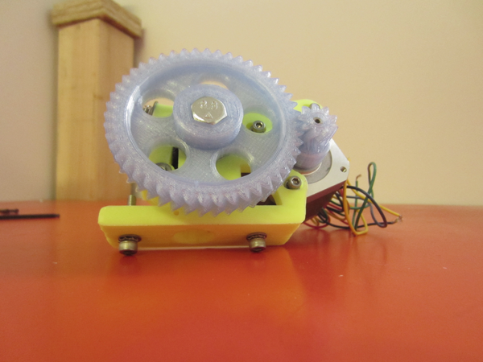
BOM
- Printed parts including: extruder, hinged idler, spacer ring (optional), large gear, small gear.
- NEMA 17 motor.
- Terawatt Industries M8 Hobbed bolt - hobbed at 30mm from head.
- 3pcs (or 4) 608 bearings.
- M8x25mm threaded rod.
- M8 washers - TW's vitamins include thick high-visibility washers.
- 3pcs M3x10mm screws, lock washers, and std. washers for NEMA17.
- 1pc. M3x30mm low-profile screw, M3 nut, and M3 fender washer for hinged idler.
- 2pcs. M4x50mm screws, 2pcs. compression spring, and 4pcs M4 fender washers for hinged idler.
- 2pcs. M4x20mm screws, washers, lock washer, and nuts for mount to x-carriage.
- 2pcs. M2.5x25mm socket cap screws (you may M2.5x30mm phillips head screws, or M2.5 cheese-head screws - please see notes about these).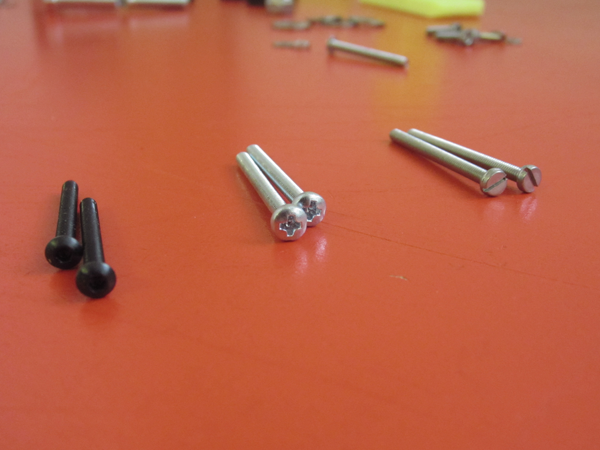
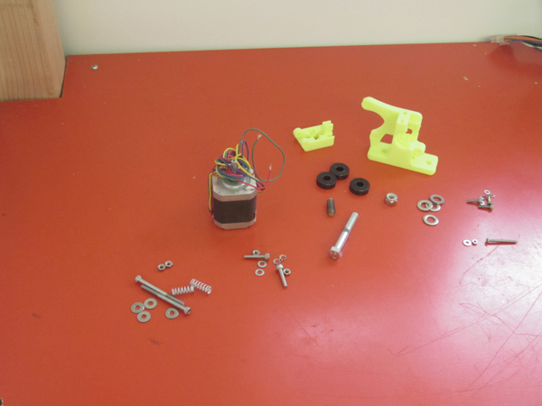
Greg's Accessible Extruder
Assembly of this component takes about an hour, maybe two, and can be done in one build 'session'.
Step 1.1: Hinged Idler
- Locate the hinged idler and de-burr the slot for the precision threaded rod. This can be done with a knife, or often by using needle nose pliers to scqueeze the M8x25mm threaded rod into the slot before the 608 bearing is loaded.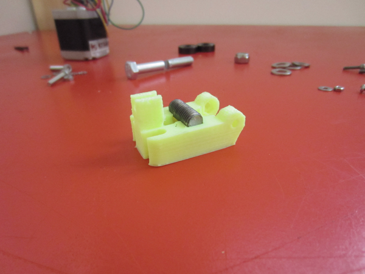
- Load the 608 bearing onto the M8x25mm threaded rod.
- Insert the threaded rod with 608 bearing into the hinged idler. Again needle nose pliers can be used to squeeze the rod into the hinged idler.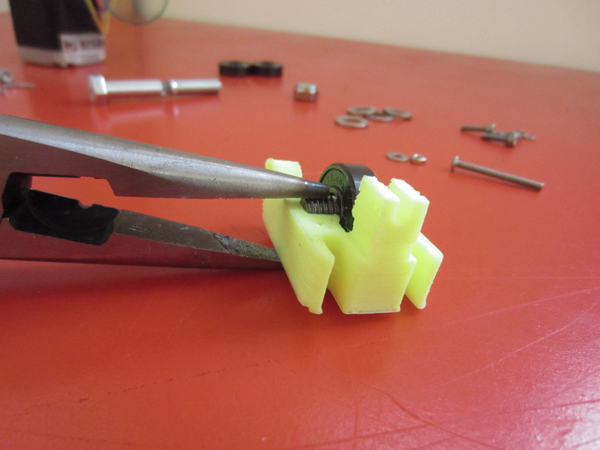
- Make sure the 608 bearing sticks out through the backside of the idler -- in other words the M8x25mm rod is fully seated. The hinge won't work properly if it's not fully seated.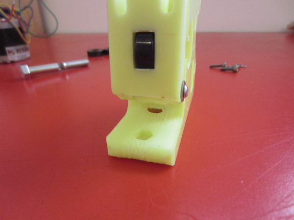
Step 1.2: Attach NEMA17 motor
- De-burr the M3 slots for the NEMA17 motor using a hex wrench and/or knife.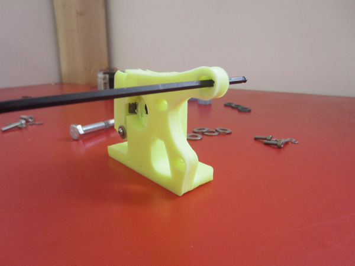
- Pre-load M3x10mm screws with washer and lock washers. M3x12mm also works.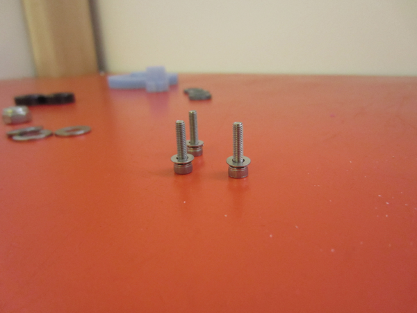
- Attach the MEMA17 motor to the extruder with the pre-loaded screws. Leave the screws a little loose so the motor can be adjusted. 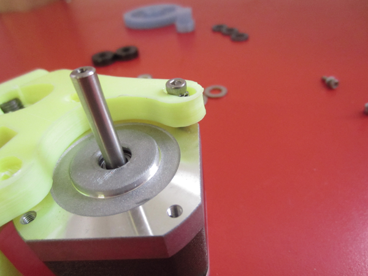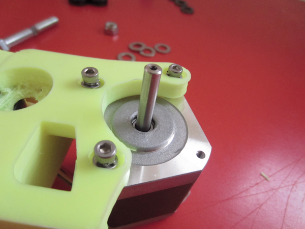
- Leave the NEMA17 screws loose...
Step 1.3: Attach the Small Herringbone Gear
- Locate the small herringbone gear, M3x10mm screw, and M3 nut.
- De-burr the captive nut slot on the small gear.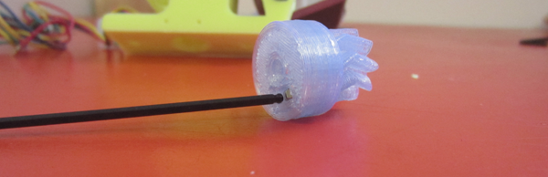
- Insert the M3 nut into the small gear's captive nut slot. If the fit is tight it helps to use a hex wrench to seat the nut into slot.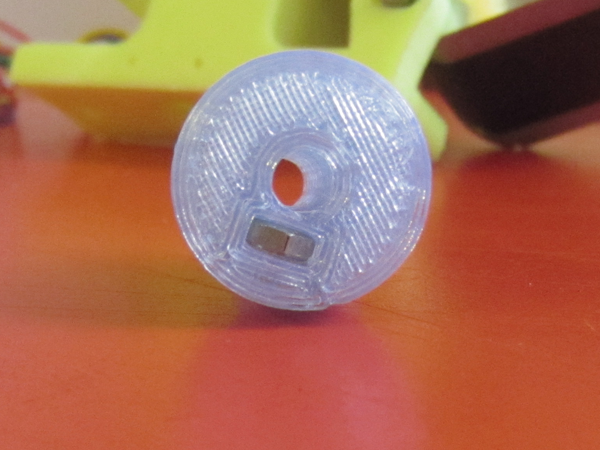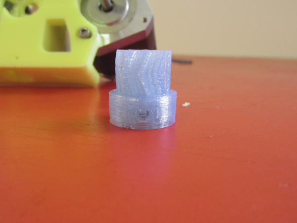
- Insert an M3x10mm screw into the set-screw hole, and screw into the captive nut you just inserted. Do not screw all the way - allow room the for the NEMA17 motor shaft.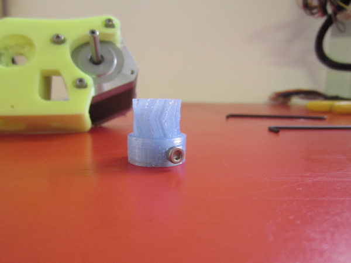
- Attach the gear to the NEMA17 motor. Leave room for the set-screw.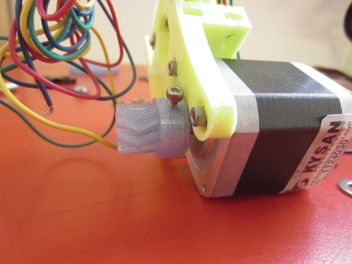
- Tighten the set screw. Otherwise, you'll wonder why your extruder doesn't work when you hear the motor spinning.
Step 1.4: Attach the Large Herringbone Gear
- De-burr the space for the M8 hobbed bolt and attach a 608 bearing.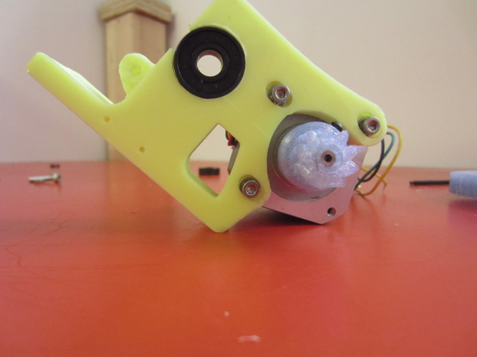
- Locate the M8 hobbed bolt; herringbone gear; and M8 washers.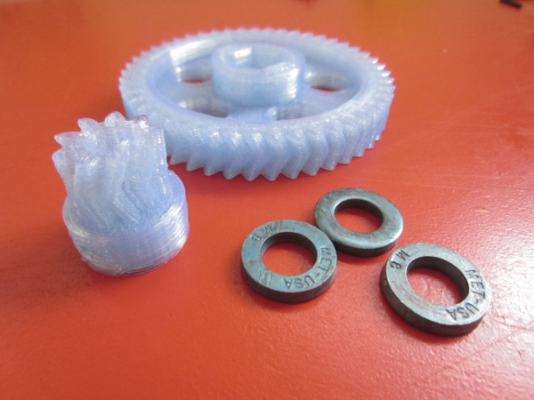
- Insert the M8 hobbed bolt into the large gear. You may need to de-burr the large gear's hex-head - usually this part is best when the M8 hex head is a tight-fit, so it doesn't have backlash. Assembly may require a little force to seat fully. It's OK to use a mallet or hammering force but we always recommend care in such situations. Do not use heat as this will likely cause misalignment!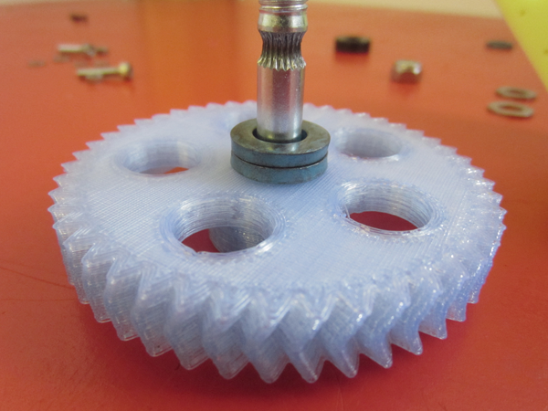
- Stack M8 washers onto the hobbed bolt. These will be used as spacers to align the hobbed area with the 3mm filament hole in the extruder. The actual number of washers you need may be variable, but with Terawatt's parts 2 pcs. high-visibility M8 washers work well.
- Insert the gear into the extruder. The small gear and large gear should collide. Thus, the easiest way to install the large gear is to back the M8 hobbed bolt off the gear partially, about halfway or more. This allows enough wiggle to install the large gear and line it up with the small gear.
- When the gears are aligned, push the M8 hobbed bolt back into the large gear, all the way through the extruder.
- With the correct number of M8 washers both are true: the hobbed area is well-aligned with the filament hole in the extruder; the large and small gears are aligned and the bolt is straight. Note the small gear can be adjusted to align with the big one by loosening the set screw and pushing/pulling the small gear on the motor shaft.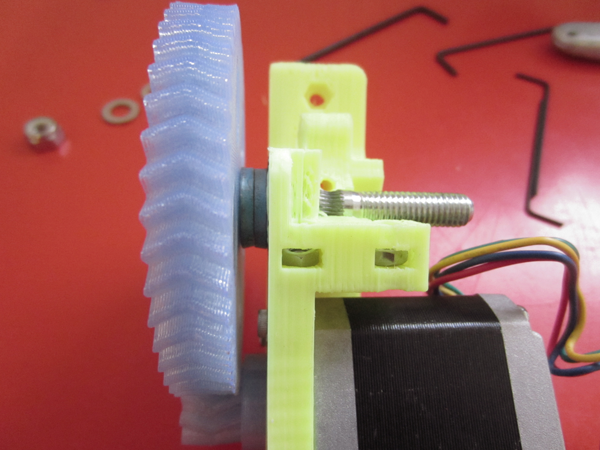
- If the alignment is not proper (either assertions above are false) then adjust the number of M8 washers. Do this by pushing the M8 hobbed bolt back out, then separate the large and small gears, and finish removing the large gear. Then add/remove M8 washers and repeat the above steps.
Step 1.5: Finish Large Gear Installation
- Ensure the alignment of the M8 hobbed bolt is proper. Attach a 608 bearing to the M8 hobbed bolt on the side opposite the large gear.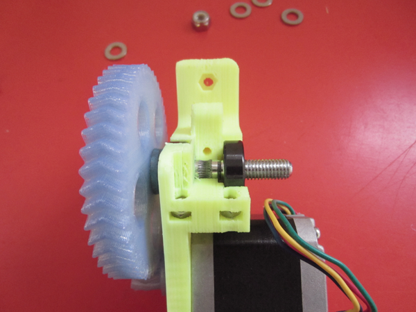
- Follow the 608 bearing with a std. M8 washer - 608s need these washers to spin freely.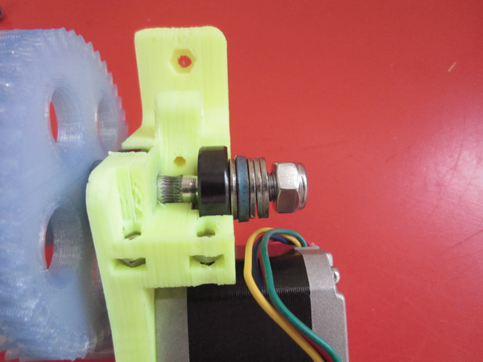
- Follow with a number of M8 washers and a M8 nylock nut. Optionally you can use a M8 lock washer and M8 nut, but even with a lock washer a regular M8 nut will slip due to vibration.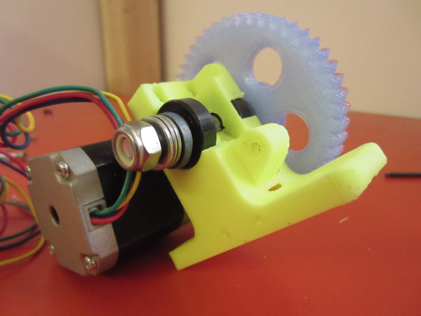
- Tighten the assembly by holding the large gear and using a 13mm wrench on the nylock nut.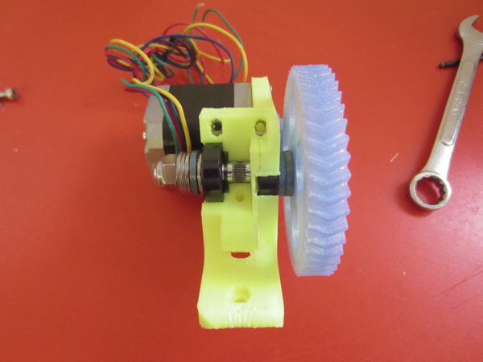
Step 1.6: Prepare Extruder for Hotend
- It's easy to strip these long M2.5 screws so take heed.
- Thoroughly de-burr the M2.5 screw holes for the j-head hotend. These are self-threading holes so it's best to use a 2mm hex wrench.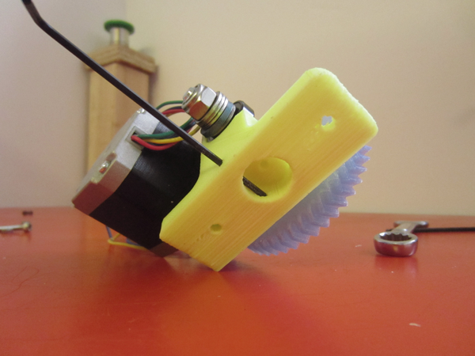
- Insert M2.5 screws - screw all the way into the holes to complete the de-burring process. Then back out. If the screw starts to strip don't push it any further, reverse direction immediately.
- NOTE: if you have phillips-head screws it's very difficult to avoid stripping - we started including extra phillips heads for this. Socket cap screws are much more manageable and we've revised our vitamins with this hardware.
Step 1.7: Attach Hinged Idler
- De-burr the M3 screw hole for mounting the hinged idler with a hex wrench.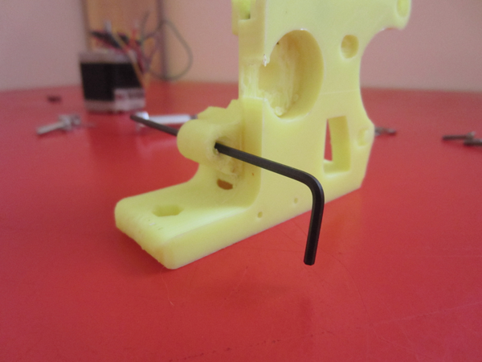
- Insert an M3 nut into the captive slot on the inside arm of the hinged idler.
- Attach the hinged idler to the extruder. Ensure the M3 nut you just inserted stays seated.
- Spin the large gear around to gain access to the screw hole for the idler.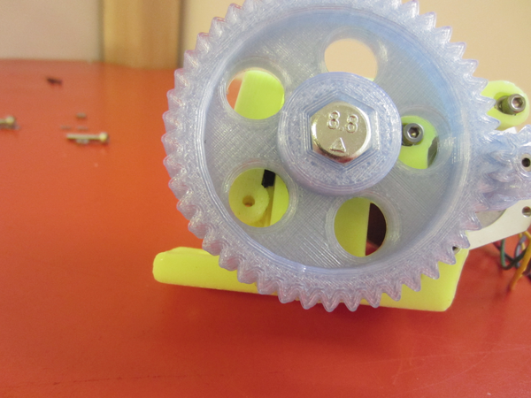
- Use an M3x30mm low-profile socket-cap screw with M3 fender washer to complete the assembly.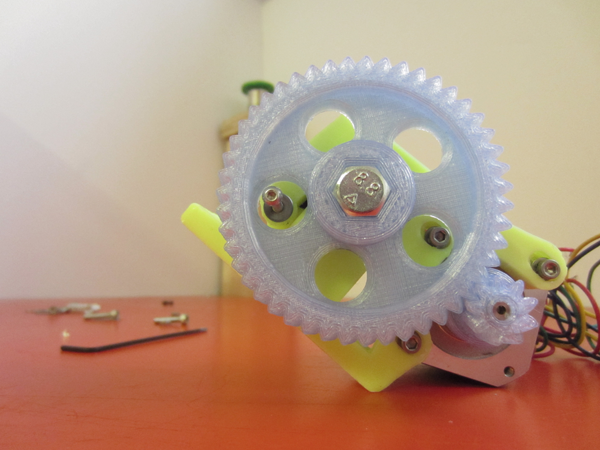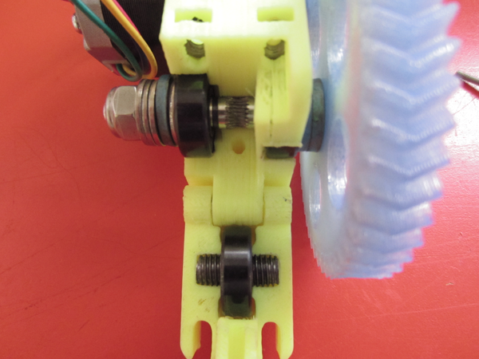
- Insert M4 nuts into the captive nut slots at the top of the extruder, where the hinged idler meets when closed.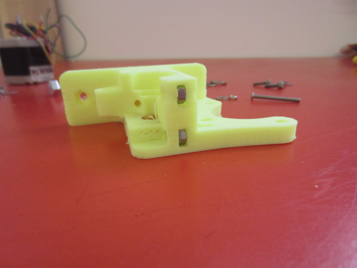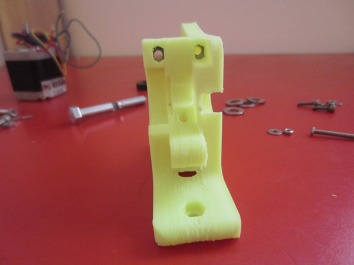
- Pre-load each M4x50mm screw with one (1) M4 fender washer, one compression spring, and another M4 fender washer.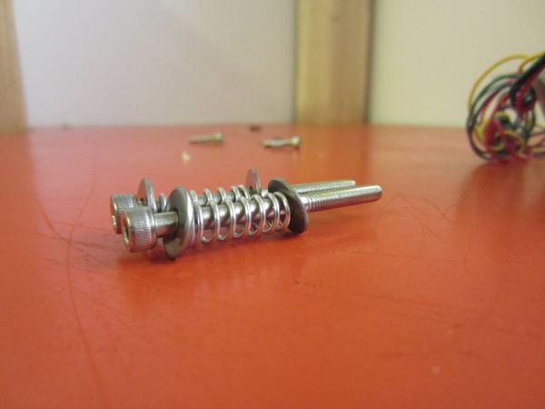
- Insert the M4x50mm screws with springs into the M4 nuts you inserted above. Only tighten to so that 1-2 threads of the screw are exposed.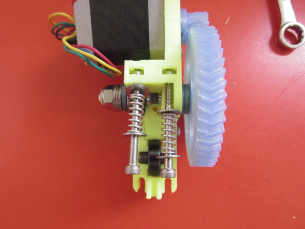
- Lift the M4x50mm screws to close the hinged idler.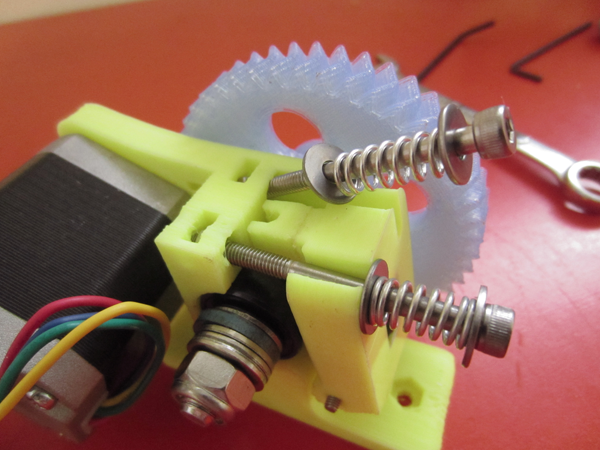
Step 1.8: Attach M4 Mounting Screws (pre-assemble)
- We don't need to attach these now, but everything's easy-to-access. We can de-burr the M4 captive nut slots and the assembly will be ready-to-go.
- Insert an M4 nut into the captive nut holes on the extruder's base.
- Insert an M4x20mm screw with lock washer and M4 std. washer into each mounting hole.
- Tighten the screw to seat the M4 nut into the captive slot. Finish both screws. 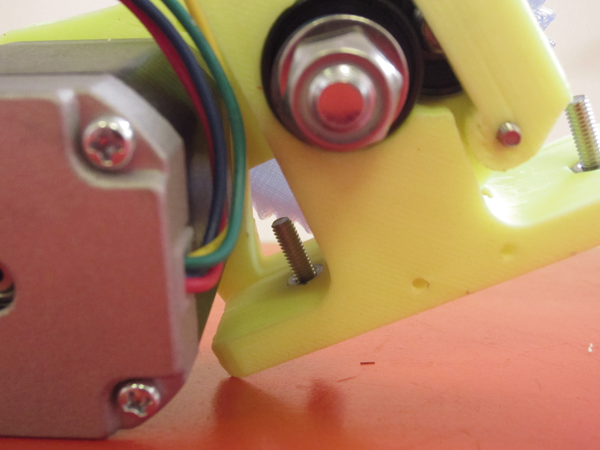
Step 1.9: Wrap-Up
- Spin the large gear and visually inspect the meshing of large+small gear and overall motion of the motor from multiple viewing angles. The gears should spin smoothly. Indeed the gears will have to wear-in together but if there is significant sticking then loosen the M3 screws on the motor and adjust.
- Make sure the M3x10mm screws for NEMA17 motor are tight.
- Now you have something to print 3D objects with! Pro-tip: printing a backup extruder set is a good idea since the extruder and hotend are the hardest-working parts of a 3D printer.